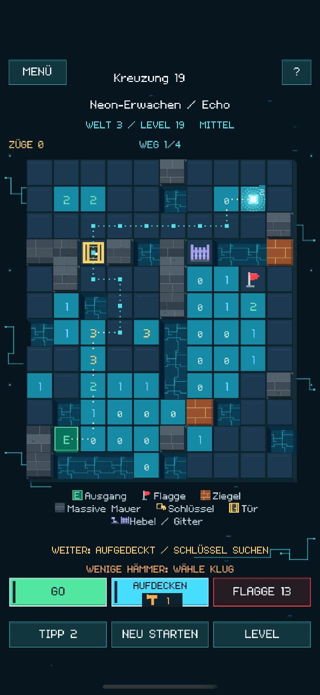
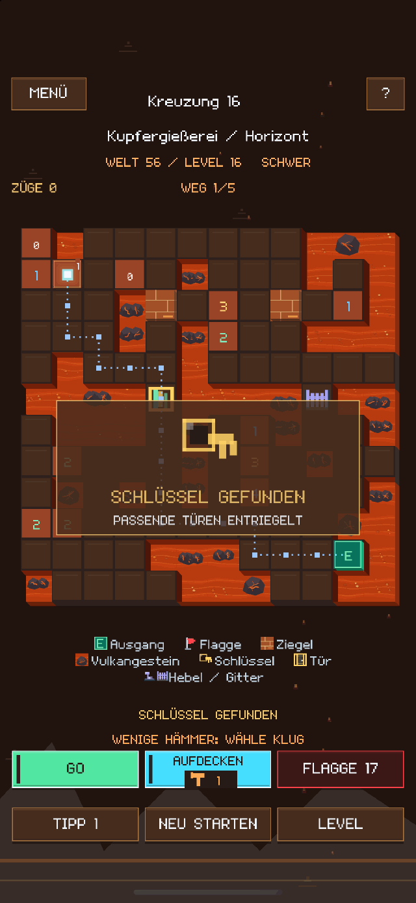
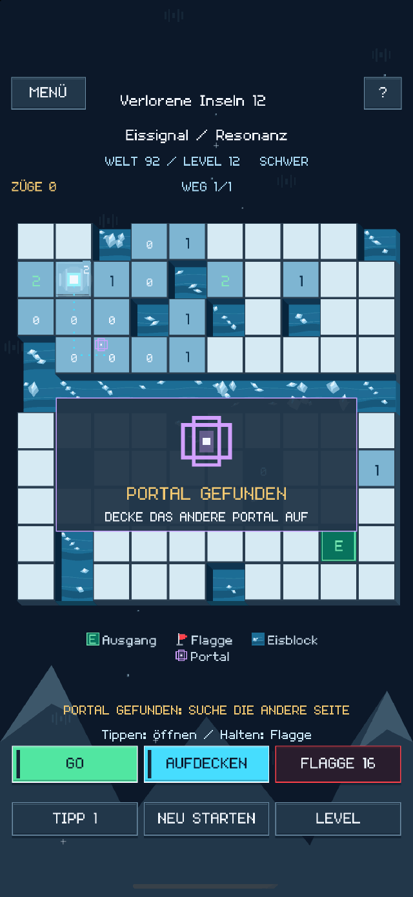
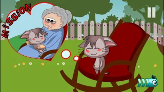
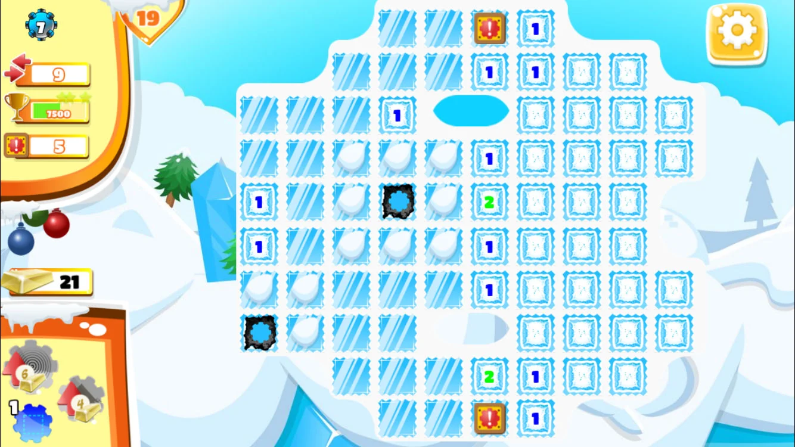

5 Point-and-Click-Abenteuer
TinyStory
Tierische Helden, bunte Inseln und rätselhafte Geschichten. Wähle dein Abenteuer aus fünf TinyStory-Spielen.
iOS · Android · Desktop, je nach Spiel
TinyStory entdeckenAnneMu’s Games · AML Creation
Entdecke TinyStory und Celestwald: zwei Point-and-Click-Reihen voller bunter Welten, liebenswerter Figuren und spannender Rätsel.
Alle Spiele entdecken ↓5 Point-and-Click-Abenteuer
Tierische Helden, bunte Inseln und rätselhafte Geschichten. Wähle dein Abenteuer aus fünf TinyStory-Spielen.
iOS · Android · Desktop, je nach Spiel
TinyStory entdecken
2 Abenteuer in einer verzauberten Welt
Werde Alchemistenlehrling, entdecke den Traumbaum und begleite seine magischen Samen auf ihrer Reise. Lerne Celestwald 1 und 2 kennen.
iOS · Android · Steam und itch.io für Spiel 1
Celestwald 1 & 2 entdeckenJetzt bei Google Play und im App Store
Minesweeper, bei dem jeder sichere Schritt einen Weg schafft.
Lies Hinweise, markiere Minen und führe ein kleines Licht durch bunte Rätselwelten. 60 Rätsel sind auf Android und iOS kostenlos.
Jetzt für Android und iOS verfügbar



Weitere Welten entdecken
Gestalte deinen Mochi oder entdecke die Mahjong-Rätsel von Mahjong Castle.

Kawaii & kreative Spiele
Gestalte einen virtuellen Mochi-Freund, ziehe kleine Plüschtiere an und dekoriere ihre Schlafzimmer. Sammle Sticker und spiele Minispiele. Bei der täglichen Golden-Cloud-Aktivität kannst du kostenlose Bunny Tokens für deine kleine Plüschwelt verdienen.
iOS · Android
Mochi Plush Kawaii entdecken
Puzzle & Logik
Verbinde freie Steine und erkunde ein magisches Schloss in 240 Leveln an 14 Orten. Kostenlos spielbar sind 30 Garten-Level und vier Eis-Level. Schließe Garten-Level 30 ab, um unbegrenzte Classic-Layouts freizuschalten. Für Android, mit einem optionalen Adventure Pack als Einmalkauf.
Android
Mahjong Castle entdeckenDie Sammlung

Point-and-Click-Abenteuer
Sechs Kätzchen, sechs kleine Abenteuer. Erkunde die Welt jeder Katze, sammle Gegenstände und löse verspielte Point-and-Click-Rätsel. Entdecke unterschiedliche Geschichten und bunte Szenen in Cats in the Box Adventure für iOS und Android.
iOS · Android
Cats in the Box Adventure entdecken
Point-and-Click-Abenteuer
Hilf einem kleinen rosa Helden, die Splitter eines zerbrochenen Kristalls zu finden. Erkunde 30 Level in den Welten Green, Fire und Candy, sammle Gegenstände und löse Rätsel. Achte unterwegs auf Fallen. Fantasiant verbindet Abenteuer und Puzzle auf Mobilgeräten und itch.io.
iOS · Android · Windows · macOS · Linux
Fantasiant · Tiny Hero entdecken
Kawaii & kreative Spiele
Ziehe Lili und ihren Teddybären an und dekoriere ihr Schlafzimmer mit Möbeln, Farben und Spielzeug. Gestalte es nach deinen Ideen und kehre in dein gespeichertes Zimmer zurück. Lili’s Bedroom ist ein werbefreies Dekorationsspiel für iOS, auch offline spielbar.
iOS
Lili’s Bedroom entdecken
Puzzle-Spiel für Kinder
Ein gemütliches Filz-Puzzlespiel für Kinder mit Formenzuordnung, kleinem Memory und einem neuen Design, das bald über denselben App-Store-Link erscheint.
iOS · Android · App Store · Google Play
Mini Funny Puzzles entdecken Google Play
Jetzt für Android und iOS verfügbar
Minesweeper, bei dem jeder sichere Schritt einen Weg schafft. Lies Hinweise, markiere Minen und führe ein kleines Licht durch bunte Rätselwelten. 60 Rätsel sind auf Android und iOS kostenlos.
Android · iOS · Google Play · App Store
Lumen Mine entdecken Bei Google Play spielen Jetzt im App Store Gameplay-Short ansehen
Puzzle & Logik
Setze bunte Bilder aus 22 Puzzles und 132 Quadratpuzzles zusammen. Wähle eine passende Schwierigkeit und kehre zu deinem gespeicherten Fortschritt zurück. Puzzles Mix bietet zwei Arten von Bilderrätseln auf iOS.
iOS
Puzzles Mix entdecken
Puzzle & Logik
Lies die Zahlenhinweise, markiere versteckte Minen und wähle jeden Zug sorgfältig. Entdecke 120 Level in zwei Welten. Spezialminen und begrenzte Züge sorgen für neue Herausforderungen. Little Minesweeper Guy bringt bunte Minesweeper-Rätsel auf iOS.
iOS
Little Minesweeper Guy entdeckenRhythmus & Entspannung
Tippe, wenn der bewegte Kreis den leuchtenden Bogen erreicht, bilde Combos und entdecke illustrierte Hintergründe. Wähle den ruhigen Zen-Modus oder den schnelleren Fast-Modus. Erkunde 10 Welten, darunter fünf kostenlose, mit optionalem Premium-Einmalkauf. Ein Rhythmusspiel für iPhone und iPad.
iOS
Zen Circle Spirit entdeckenMochi Plush Kawaii · 2026
Gestalte deinen Mochi, ziehe kleine Plüschfreunde an und dekoriere ihre Zimmer. Sammle Sticker und erspiele täglich kostenlose Bunny Tokens bei Golden Cloud.
Entdecken Mochi
AML Creation · Klänge & ruhige Momente
Mische Regen, Wellen, Kaminfeuer und Hintergrundrauschen zu deiner eigenen Klangatmosphäre. Stelle jede Ebene ein, nutze einen Timer und höre offline ohne Werbung. Somnifox ist eine Klang-App für iPhone und iPad mit kostenlosen Funktionen und optionalem Premium-Zugang.
Entdecken Somnifox ↗